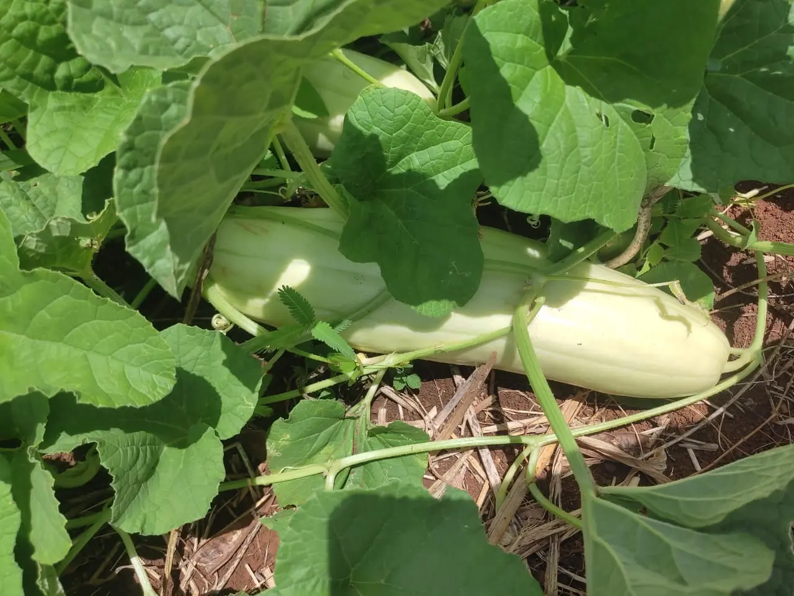

Pepino (Cucumis sativus).
La temperatura optima de germinación es de 25-30°C, su tiempo estimado es de 4-8 dias, La forma de germinación se utiliza con banderas con sustrato ligero o directamente en semillero se debe de mantener en humedad constante y con luz solar directa al principio.La siembra viene siendo directamente en terreno definitivo, germina en semillero y se trasplanta cuando tiene 2-3 hojas(2-3 semanas después de germinar), la distancia es de 30-50cm entre plantas, la densidad varia según el sistema de cultivo.